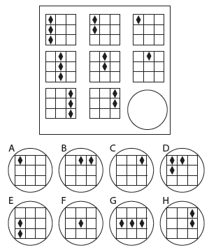

Dehaların Sorunu, 1. Bölüm
“BİR SINIF DOLUSU ZEKİ ÇOCUKLA KARŞI KARŞIYA
OLMANIZ DURUMUNDA BİR ÇOCUĞUN
IQ’SUNU BİLMEK FAZLA İŞE YARAMIYOR.”
1.
Amerika’da yayımlanan 1 vs. 100 yarışma programı 2008 sezonunun beşinci bölümünde Christopher Langan adlı özel bir konuğu ağırladı.
1 vs. 100, Who Wants to Be a Millionaire’in[*] gösterdiği olağanüstü başarının ardından ortaya çıkan birçok televizyon programından biri. Sıradan insanlardan oluşan 100 kişilik sabit bir gruba yer veriyor. Bunlar her hafta özel bir konukla zeka yarıştırıyor. Ödül 1 milyon dolar. Konuk 100 rakibinden daha fazla sayıda soruya doğru yanıt verecek kadar zeki olmak zorunda. Bu standarda göre, çok az kişi Christopher Langan kadar üstün nitelikli olabileceği izlenimini yarattı.
“Bu gece grup gelmiş geçmiş en ateşli rekabete soyunuyor” diye söze girdi dış ses. “Huzurlarınızda birçoklarına göre Amerika’nın en zeki adamı olan Chris Langan.” Kamera ellili yaşlarında tıknaz, kaslı bir adama yavaş yavaş pan yaptı. “Ortalama bir insanın IQ’su 100’dür” diye devam etti dış ses. “Einstein’ın IQ’su 150 idi. Chris’in IQ’su ise 195. Şu sıralar koca beyni bir evren kuramıyla meşgul. İyi de bakalım bu büyük boy kafatası, grubu alt edip 1 milyon doları almaya yetecek mi? Hemen şimdi 1 vs. 100’de.”
Langan çılgın alkışlar arasında sahneye adım attı.
“1 vs. 100’de başarılı olmak için çok zeki olmak gerektiğini düşünmüyorsunuz, öyle değil mi?” diye sordu programın sunucusu Bob Saget. Langan’a garip bir biçimde baktı; sanki Langan bir tür laboratuvar deneğiymiş gibi.
“Gerçekte ben bunun bir engel olabileceğini düşünüyordum” yanıtını verdi Langan. Derin, kendinden emin bir sesi vardı. “Yüksek bir IQ’nuz varsa uzmanlaşmak, derin düşünmek eğilimi gösterirsiniz. Önemsiz şeylerden kaçınırsınız. Ancak şimdi bu insanları gördükten sonra” –gruba baktı; gözlerindeki neşe olup bitenleri ne kadar komik bulduğunu ele veriyordu– “başa çıkabileceğim düşüncesindeyim.”
Geçtiğimiz 10 yıl içinde Langan garip bir tür ün kazandı. Amerikan yaşamında dehanın tanıdık yüzü, ünlü bir “çizginin dışındaki” haline geldi. Haber programlarına davet ediliyor, dergilerde yaşam öyküsüne yer veriliyordu hatta film yapımcısı Errol Morris’in bir belgeseline konu da oldu; bütün bunların tek nedeni tanımlanması olanaksız görünen bir beyne sahip olması.
Bir keresinde televizyon haber programı 20/20, Langan’a bir IQ testi uygulamak için bir nöropsikoloğu görevlendirdi ve Langan’ın skoru gerçekten grafiklerin dışında kaldı; tam olarak ölçülemeyecek kadar yüksekti. Bir başka sefer Langan’a sıradan IQ testleri için fazla zeki olan insanlara göre özel olarak hazırlanmış bir IQ testi uygulandı. Biri dışında tüm soruları doğru yanıtladı.[*] Langan altı aylıkken konuşmaya başlamıştı. Üç yaşındayken, pazar günleri radyoda çizgi roman okuyan sunucuyu dinliyordu ve yazıları kendi başına takip ede ede kendi kendine okuma yazma öğrendi. Beş yaşında büyük babasına Tanrı’nın varlığıyla ilgili sorular sormaya başladı; yanıtların kendisini düşkırıklığına uğrattığını anımsıyor.
Okulda Langan hiç çalışmadan yabancı dil sınavına girer, öğretmen gelmeden önce vakti olursa iki üç dakika ders kitabına şöyle bir göz atar ve sınavın birincisi olurdu. İlk gençlik yıllarında rençper olarak çalışırken kuramsal fizik alanında kapsamlı olarak okumaya başladı. 16 yaşında Bertrand Russell ve Alfred North Whitehead’in ünlü derin ve karmaşık başyapıtı Principia Mathematica’yı okumayı başardı. Sınavın bir yerinde uyuyakalmasına karşın, SAT testinden mükemmel bir puan aldı.
Kardeşi Mark, Langan’ın lisedeki yaz programından söz ederken “Bir saat matematik çalışırdı” diyor. “Sonra bir saat Fransızca çalışırdı. Sonra Rusça. Sonra felsefe okurdu. Bunu sıkı ve ciddi biçimde her gün yapardı.”
Bir diğer kardeşi Jeff de şöyle diyor: “Biliyor musunuz, Christopher 14, 15 yaşındayken karikatüre benzer bir şeyler çizerdi, fotoğraf gibi olurdu. 15 yaşında gitarla Jimi Hendrix’e birebir eşlik edebiliyordu. Bum. Bum. Bum. Christopher ders yılı süresinin yarısında okula hiç gitmezdi. Sadece sınavlarda boy gösterirdi ve bu konuda hiç kimsenin yapabileceği bir şey yoktu. Bize göre bu eğlenceliydi. Bütün bir sömestirin ders kitaplarını iki günde özetleyebiliyor, gözden kaçırmaması gereken her şeye dikkat gösteriyor ve sonra daha önce yapmakta olduğu şeye geri dönüyordu.”[*]
1. vs. 100’ün setinde Langan ağırbaşlı ve özgüven sahibiydi. Sesi derindi. Gözleri kısık ve ateşliydi. Doğru sözcüğü ararken konular çevresinde dönüp durmadı ya da bir önceki cümleyi tekrarlamak için geri dönmedi. Ayrıca eee, aaa, ah, vb. demedi ya da konuşma diline özgü yumuşatıcı ifadeler kullanmadı. Cümleleri, tören alanındaki askerler gibi, birbiri ardına, duraksamadan, ustalıkla çıktı. Saget’in ona yönelttiği her soruyu önemsizmiş gibi aştı. Kazancı 250.000 dolara ulaştığı noktada, her şeyi kaybetme riskinin, devam etmenin potansiyel yararlarından daha yüksek olduğunu kafasında hesaplıyor gibiydi. Birdenbire durdu. “Parayı alacağım” dedi. Saget’in elini kuvvetle sıktı ve yarışa son verdi; işi zirvede bıraktı ki dehaların da her zaman böyle yaptığını düşünmekten hoşlanırız.
2.
Stanford Üniversitesi’nde genç bir profesör olan Lewis Terman I. Dünya Savaşı’ndan hemen sonra Henry Cowell adında dikkate değer bir çocukla tanıştı. Cowell yoksulluk ve kaos içinde yetişmişti. Diğer çocuklarla iyi geçinemediği için yedi yaşına kadar hiç okula gitmedi. Stanford kampüsünden fazla uzak olmayan tek sınıflı küçük bir okul binasında bekçi olarak çalışıyordu ve gün içinde işinden gizlice uzaklaşıp piyano çalıyordu. Ve yaptığı müzik güzeldi.
Terman’ın uzmanlık alanı zeka testleriydi; gelecek 50 yılda dünyada milyonlarca insana uygulanacak olan standart IQ testi Stanford-Binet onun eseriydi. Bu nedenle, Cowell’ın da IQ’sunu ölçmeye karar verdi. Çocuk akıllı olmalı, diye fikir yürüttü ve hiç kuşkusuz, öyleydi. IQ’su 140’ın üzerindeydi ki bu deha seviyesine yakındır. Terman büyülenmişti. Kayaların içinde daha kaç elmas olduğunu merak etti.
Diğerlerini aramaya başladı. 19 aylıkken alfabeyi öğrenen bir kız buldu ve dört yaşına geldiğinde Dickens ve Shakespeare okumakta olan bir başka kız. Profesörleri bir insanın hukuki fikirlere ilişkin uzun pasajları eksiksiz olarak ezbere okuyabileceğine inanmadıkları için hukuk fakültesinden kovulmuş olan genç bir adam buldu.
1921’de Terman üstün zekalıları incelemenin hayatının işi olduğuna karar verdi. Commonwealth Foundation adlı vakıftan aldığı büyük miktarda bağışla, bir saha çalışanları ekibi kurarak onları Kaliforniya’daki ilkokullara gönderdi. Öğretmenlerden sınıflarındaki en parlak çocukları seçmeleri istendi. Bu çocuklara bir zeka testi uygulandı. İlk 100’de 10’a giren çocuklara ikinci bir IQ testi uygulandı ve bu sınavda da 130’un üzerinde puan alanlara üçüncü bir IQ testi uygulandı; Terman bu sonuçlara göre en iyi, en parlak zekalı olanları seçti. Terman bu işi tamamladığında, 250 bin ilkokul ve lise öğrencisine ait kayıtları taradı ve IQ ortalamaları 140’ın üzerinde olan ve 200’e kadar çıkan 1.470 çocuk saptadı. Bu genç dehalar grubu “Termitler” olarak tanınmıştır ve tarihte en ünlü psikolojik çalışmalardan biri haline gelecek olan çalışmanın denekleridir.
Terman sahiplendiği bu çocukları hayatının geri kalanında yavrularına göz kulak olan bir dişi kuş gibi kolladı. Onları takip etti, test etti, ölçtü ve analiz etti. Eğitimlerinde neleri başardıkları not edildi, evlilikleri takip edildi, hastalıkları listelendi, ruh sağlıklarının grafiği çizildi ve bütün terfileri ve iş değişiklikleri özenle kaydedildi. Terman onlar için tavsiye mektupları, iş başvuruları ve lisansüstü programlar için başvurular kaleme aldı. Sürekli bir öğüt ve öneri akışıyla onlara yardımda bulundu ve bulgularını Dehaların Genetik Araştırması başlıklı kalın kırmızı ciltlere kaydedip durdu.
“Bir bireyin yaşamında, belki ahlakı dışında, IQ’su kadar önemli hiçbir şey yoktur” demişti bir keresinde Terman. “Bilimi, sanatı, devlet yönetimini, eğitimi ve genel olarak sosyal refahı ileri götüren liderler yetiştirmek için” çok yüksek bir IQ’ya sahip bu insanlar arasından seçim yapmalıyız, inancındaydı. Denekleri büyüdükçe Terman onların gelişimiyle ilgili verileri güncellenmiş olarak yayımladı, olağanüstü başarılarını tarihe not düştü. Bu kişiler lisedeyken Terman mutluluktan başı dönerek şöyle yazıyordu: “Herhangi bir gazetede Kaliforniyalı kızların ve erkeklerin katıldığı herhangi bir yarışma etkinliğine ilişkin bir haber görüp de kazananlar arasında bizim üstün zekalı grubumuzun bir ya da birkaç üyesiyle karşılaşmamak neredeyse olanaksız.” Sanatsal zekası en yüksek deneklerinden bazılarının yazı örneklerini alıp edebiyat eleştirmenlerinden bunları ünlü yazarların ilk çalışmalarıyla karşılaştırmalarını istedi. Hiçbir fark bulamadılar. Bütün göstergelerin “görkemli kişilik” potansiyeline sahip bir gruba işaret ettiğini söylüyordu. Terman şuna inanıyordu ki ABD’nin gelecekteki elitleri olmak Termitler’in yazgısıydı.
Bugün Terman’ın fikirlerinden birçoğu başarıya ilişkin düşünce biçimimizin merkezinde olmayı sürdürüyor. Okulların “üstün zekalılar”a yönelik programları var. Seçkin üniversiteler öğrencilere kayıt için çoğunlukla (American Scholastic Aptitude Test gibi) bir zeka testinden geçmeyi şart koşuyor. Google ya da Microsoft gibi ileri teknoloji şirketleri de aynı düşünceyle, çalışan adaylarının bilişsel yeteneklerini dikkatle ölçüyor; IQ skalasının en tepesinde bulunanların en yüksek potansiyele sahip olduklarına ikna olmuş durumdalar. (Microsoft’ta iş başvurusunda bulunanlara “Rögar kapakları neden yuvarlaktır?” klasiği de dâhil, zeka ve yeteneklerini ölçmek için tasarlanmış bir dizi soru yöneltiliyor. Eğer bu sorunun yanıtını bilmiyorsanız, Microsoft’ta çalışacak kadar zeki değilsiniz demektir.[*])
Sihirli güçlerim olsaydı ve IQ’nuzu 30 puan yükseltmeyi önerseydim, bunu kabul ederdiniz, öyle değil mi? Bunun hayatta ilerlemenize yardımcı olacağını düşünürdünüz. Ve Chris Langan gibi birinden söz edildiğini duyduğumuzda verdiğimiz içgüdüsel tepki Terman’ın yaklaşık bir yüzyıl önce Henry Cowell’ı tanıdığında vermiş olduğu içgüdüsel tepkiden farksızdır. Hayranlık duyarız. Dehalar çizginin dışındakilerin uç noktasıdır. Böyle birini hiçbir şey kesinlikle yolundan alıkoyamaz.
İyi de bu gerçekten doğru mu?
Outliers’ta şu ana dek, olağanüstü başarıların, yetenekten çok, fırsatla ilişkili olduğunu gördük. Bu bölümde, çizginin dışındakinin en katışıksız ve damıtılmış haline –dehaya– bakarak, durumun neden böyle olduğunu daha derinlemesine incelemek istiyorum. Üstün zekanın önemini anlamak için yıllar boyunca Terman gibi kişilerden ipuçları aldık. Ancak, göreceğimiz gibi, Terman bir hata yaptı. Termitler hakkında yanıldı; 16 yaşında Principia Mathematica’yla başa çıkabilen genç Chris Langan’la karşılaşmış olsaydı onun hakkında da yanılabilirdi. Terman gerçek bir “çizginin dışındaki”nin kim ya da ne olduğunu anlamadı ve bu günümüzde de yapmaya devam ettiğimiz bir hata.
3.
En yaygın kullanılan zeka testlerinden biri Raven Standart İlerlemeli Matrisler Testi’dir. Dil becerisi ya da spesifik bir bilgi birikimi gerektirmez. Soyut akıl yürütme becerilerinin ölçümüdür. Tipik bir Raven testi, her biri bir öncekinden daha zor olan 48 sorudan oluşur ve IQ kaç soruya doğru yanıt verdiğiniz temel alınarak ölçülür.
İşte Raven testinde sorulan tipik sorulardan biri.

Çözebildiniz mi? Çoğunuzun çözmüş olduğunu tahmin ediyorum. Doğru yanıt C. Şimdi de bunu deneyin. Raven testinin sonlarında yer alan gerçekten zor bir soru.
Doğru yanıt A. İtiraf etmeliyim ben doğru yanıtı bulamadım ve çoğunuzun da bulamadığını tahmin ediyorum. Oysa Chris’in bulmuş olacağı neredeyse kesin. Langan gibi kişilerin gerçekten akıllı olduğunu söylediğimizde, bu son soruya benzer bulmacaları çözebilen bir beyinlerinin olduğunu kastediyoruz.
Bir kişinin Raven testi gibi bir IQ testindeki performansının gerçek yaşamda nasıl başarıya dönüştüğünü saptamak için yıllardır pek çok araştırma yapıldı. Skalanın en altında yer alan –IQ’su 70’in altında çıkan– kişiler zihinsel engelli kabul ediliyor. Ortalama skor ise 100; üniversiteyle başa çıkabilmek için büyük olasılıkla bu puanın hemen üzerinde olmanız gerekiyor. Bu arada, oldukça rekabetçi bir lisansüstü programa kabul edilmek ve böyle bir programda başarılı olmak için IQ’nuzun büyük olasılıkla en az 115 olması gerekiyor. Genel olarak skorunuz ne kadar yüksekse o kadar çok eğitim alıyor, o kadar çok para kazanıyor ve –ister inanın ister inanmayın– o kadar uzun yaşıyorsunuz.
Ancak bir tuzak da söz konusu. Başarı ile IQ arasındaki ilişki ancak bir noktaya kadar işliyor. 120 civarında bir IQ’ya ulaştıktan sonra alınan ekstra IQ puanları gerçek dünyada ölçülebilir bir avantaja dönüşür görünmüyor.[*]
“IQ’su 170 olan birinin IQ’su 70 olan birinden daha iyi düşündüğü fazlasıyla kanıtlanmıştır” diyor İngiliz psikolog Liam Hudson “ve bu durum daha yakın bir karşılaştırmada da –örneğin, 100 IQ ile 130 IQ arasında da– geçerlidir. Ancak her ikisinin de IQ’su görece yüksek olan iki kişi karşılaştırıldığında bu ilişki ortadan kalkar görünüyor… Yetişkin IQ’su 130 olan deneyimli bir bilim adamının Nobel Ödülü kazanma olasılığı, IQ’su 180 olan bir bilim adamından farksız.”
Hudson’ın söylediğine göre, IQ’nun önemi, basketbolda boyun taşıdığı öneme çok benziyor. 1,71’lik birinin profesyonel basketbol oynamak konusunda gerçekçi bir şansı var mıdır? Gerçekten de yoktur. O düzeyde basketbol oynamak için boyunuzun en az 1,83 ya da 1,86 olması gerekiyor ve eşit koşullarda 1,89’luk bir boy 1,86’lık bir boydan ya da 1,92’lik bir boy 1,89’luk bir boydan daha iyi olsa gerek. Ancak belli bir noktadan sonra boy çok önemli olmamaya başlıyor. Boyu 2,07 metre olan biri, 5 santimetre daha kısa olan birinden otomatik olarak daha iyi değil. (Sonuçta, gelmiş geçmiş en iyi basketbol oyuncusu Michael Jordan’ın boyu 2,01 metreydi). Bir basketbol oyuncusu sadece yeterince uzun olmalı ve aynı durum zeka için de geçerli. Zekanın bir eşiği var.
1 vs. 100 yarışmasından söz ederken Einstein’ın IQ’sunun 150, Langan’ın IQ’sunun ise 195 olduğuna işaret ettik. Langan’ın IQ’su Einstein’dan yüzde 30 daha yüksek. Ancak bu Langan’ın Einstein’dan yüzde 30 daha akıllı olduğu anlamına gelmiyor. Böyle bir yorum saçma olur. Bütün söyleyebileceğimiz, fizik gibi düşünsel açıdan gerçekten zor alanlar söz konusu olduğunda, her ikisinin de belli ki yeterince akıllı olduğudur.
Anlıyorum ki IQ’nun bir eşiğinin olduğu fikri, sezgilerimize ters düşüyor. Örneğin, bilim alanında Nobel Ödülü kazananların hayal edilebilecek en yüksek IQ skorlarına sahip olması, üniversiteye giriş sınavlarında mükemmel puan alan insanlar arasında yer alması, bütün bursları kazanması ve lisedeyken ülkenin en iyi üniversiteleri tarafından seçilecek kadar parlak notlar almış olması gerektiğini düşünüyoruz.
Oysa tıp alanında Nobel Ödülü kazanan son 25 Amerikalının devam etmiş olduğu üniversitelerin listesine bir göz atın (liste 2007’den başlayarak geriye gidiyor).
Antioch College
Brown Üniversitesi
UC Berkeley
Washington Üniversitesi
Columbia Üniversitesi
Case Institute of Technology
MIT
Caltech
Harvard Üniversitesi
Hamilton College
Columbia Üniversitesi
Kuzey Carolina Üniversitesi
DePauw Üniversitesi
Pennsylvania Üniversitesi
Minnesota Üniversitesi
Notre Dame Üniversitesi
Johns Hopkins Üniversitesi
Yale Üniversitesi
Union College, Kentucky
Illinois Üniversitesi
Teksas Üniversitesi
Holy Cross
Amherst College
Gettysburg College
Hunter College
Hiç kimse bu listenin Amerika’da en iyi lise öğrencilerinin üniversite tercihlerini temsil ettiğini söyleyemez. Listede Yale, Columbia ve MIT var, ancak aynı zamanda DePauw, Holly Cross ve Gettysburg College da var. İyi okulların listesi.
Aynı şekilde, işte kimya alanında Nobel Ödülü’ne en son aday olan 25 Amerikalının devam etmiş olduğu üniversitelerin listesi:
City College of New York
City College of New York
Stanford Üniversitesi
Dayton Üniversitesi, Ohio
Rollins College, Florida
MIT
Grinnell College
MIT
McGill Üniversitesi
Georgia Institute of Technology
Ohio Wesleyan Üniversitesi
Rice Üniversitesi
Hope College
Brigham Young Üniversitesi
Toronto Üniversitesi
Nebraska Üniversitesi
Dartmouth College
Harvard Üniversitesi
Berea College
Augsburg College
Massachusetts Üniversitesi
Washington Eyalet Üniversitesi
Florida Üniversitesi
Kaliforniya Üniversitesi, Riverside
Harvard Üniversitesi
Nobel Ödülü kazanmak için belli ki en az Notre Dame ya da Illinois Üniversitesi kadar iyi bir üniversiteye girmeye yetecek zekaya sahip olmanız gerekiyor. O kadar.[*]
Bu radikal bir fikir, öyle değil mi? Kızınızın iki üniversiteye kabul edildiğini varsayın; Harvard Üniversitesi ve Washington, DC’deki Georgetown Üniversitesi. Hangisine gitmesini isterdiniz? Sanırım Harvard, çünkü Harvard “daha iyi” bir okul. Harvard öğrencileri giriş sınavlarında yüzde 10 ila 15 daha yüksek puan alıyor.
Ancak zeka hakkında öğrendiklerimiz düşünüldüğünde, okulların bir yarıştaki koşucular gibi sıralanabileceğine ilişkin fikir hiçbir anlam ifade etmiyor. Georgetown öğrencileri belli bir ölçekte Harvard öğrencileri kadar zeki olmayabilir. Ancak hepsinin de yeterince zeki olduğu açıktır ve geleceğin Nobel Ödülü sahipleri Harvard gibi okullardan olduğu kadar Georgetown gibi okullardan da çıkacaktır.
Son zamanlarda psikolog Barry Schwartz seçkin okulların karmaşık kayıt süreçlerine son vermelerini ve sadece eşiği geçen herkesin dâhil edileceği bir çekiliş yapmalarını önerdi. “İnsanları iki kategoriye ayırın” diyor Schwartz. “Yeterince iyi olanlar ve olmayanlar. Yeterince iyi olanları şapkanın içine koyun. Yeterince iyi olmayanlar ise reddedilmiş olsun.” Schwartz fikrinin kabul edilme şansının neredeyse sıfır olduğunu istemeye istemeye kabul ediyor. Ancak kendisi fikrinde kesinlikle haklı. Hudson’ın kaleme almış olduğu gibi “Bir sınıf dolusu zeki çocukla karşı karşıya olmanız durumunda bir çocuğun IQ’sunu bilmek fazla işe yaramıyor.”[*] (Ve unutmayın kendisi bu araştırmayı 1950’lerin ve 60’ların İngiltere’sinde sadece erkek öğrencilerin gittiği yatılı okullarda yapmıştı.)
Eşik etkisine ilişkin pratik bir örnek vereyim. Michigan Üniversitesi hukuk fakültesi, ABD’deki birçok seçkin eğitim kurumu gibi, dezavantajlı altyapılardan gelen başvurular söz konusu olduğunda pozitif ayrımcılık politikası uyguluyor. Her sonbahar Michigan’a kayıt yaptıran öğrencilerden yüzde 10 kadarı ırksal azınlıklardan geliyor ve hukuk fakültesi bu öğrenciler için giriş koşullarında önemli bir esnekliğe yönelmese –onları diğerlerinden daha düşük lise notlarıyla ve sınav sonuçlarıyla kabul etmese– bu oranın yüzde 3’ün altında kalacağı tahmin ediliyor. Dahası, hukuk fakültesindeki azınlık öğrencilerin notlarıyla diğer öğrencilerin notlarını karşılaştıracak olursak beyaz öğrencilerin daha başarılı olduğunu görüyoruz. Bu şaşırtıcı değil; eğer bir grubun lise notları ve sınav puanları diğer grubunkilerden daha yüksekse, onların hukuk fakültesinde de daha yüksek notlar alacağı neredeyse kesindir. Pozitif ayrımcılık programlarının bu denli tartışmalı olmasının nedenlerinden biri budur. Hatta son zamanlarda Michigan Üniversitesi’nin pozitif ayrımcılık programına yönelik bir itiraz ABD Yüksek Mahkemesi’ne kadar gitti. Seçkin bir eğitim kurumunun akranlarından daha niteliksiz öğrencileri alması birçok kişi için rahatsız edici bir durum.
Bununla birlikte, birkaç yıl önce, Michigan Üniversitesi, hukuk fakültesinden mezun olan azınlık öğrencilerin ne kadar başarılı olduğunu yakından incelemeye karar verdi. Ne kadar para kazanıyorlardı? Mesleklerinde ne kadar ilerliyorlardı? Kariyerleri onları ne kadar tatmin ediyordu? Sosyal ve toplumsal anlamda ne tür katkılarda bulunuyorlardı? Ne tür ödüller alıyorlardı? Gerçek dünyada başarı ölçütü olarak algılanabilecek her şeyi incelediler. Ve ulaştıkları sonuçlar onları şaşırttı.
“Azınlık öğrencilerimizin, pek çoğunun, başarılı olduğunu biliyorduk” diyor Michigan araştırmasını gerçekleştirenlerden biri olan Richard Lempert. “Sanırım beklentimiz yarısının ya da üçte ikisinin beyaz öğrenciler kadar başarılı olmadığını, ancak yine de pek çoğunun oldukça başarılı olduğunu görmekti. Oysa çok şaşırdık. Her açıdan aynı derecede başarılı olduklarını gördük. Ciddi bir farklılık gördüğümüz hiçbir nokta olmadı.”
Lempert, bir hukuk fakültesinin önemsemesi gereken tek ölçüte –mezunların gerçek dünyada gösterdikleri başarıya– göre, azınlık öğrencilerin daha niteliksiz olmadığını söylemek istiyor. Onlar da beyaz öğrenciler kadar başarılı. Neden mi? Çünkü Michigan’daki azınlık öğrencilerin akademik referansları beyaz öğrencilerinki kadar iyi olmasa da hukuk fakültesi öğrencilerinin kalitesi onları eşiğin üstünde tutacak kadar yüksek. Yeterince zekiler. Bir sınıf dolusu zeki hukuk öğrencisiyle karşı karşıya olmanız durumunda, tek bir hukuk öğrencisinin sınav notlarını bilmek fazla işe yaramıyor.
4.
Eşik fikrini bir adım ileri taşıyalım. Eğer zeka sadece belli bir noktaya kadar önem taşıyorsa, diğer şeyler –zekayla hiçbir ilgisi olmayan şeyler– daha fazla önem taşımaya başlamalı. Bu yine basketbola benziyor: Bir kişinin boyu yeterince uzun olduktan sonra, artık uzunluğu değil, hızı, sahaya hakimiyet duygusunu, çevikliği, topa hakimiyet becerilerini ve atışta ustalığı önemsemeye başlıyoruz.
O halde, zeka konusunda bu diğer şeyler neler olabilir? Evet, IQ’nuzu ölçmek yerine size bütünüyle farklı bir sınav uyguladıklarını varsayın.
Aşağıdaki cisimlerin aklınıza gelen bütün farklı kullanım alanlarını yazın:
1. tuğla
2. battaniye
Bu (Raven’inki gibi, sıralanan seçenekler arasından bir tercih yapmanızı ve doğru yanıtta birleşmenizi bekleyen bir testin tersine) “farklılık testi” olarak adlandırılıyor. Hayal gücünüzü kullanmanızı ve zihninizi olabildiğince çok yönde çalıştırmanızı gerektiriyor. Farklılık testinde belli ki tek bir doğru yanıt yok. Testi uygulayan kişinin aradığı şey, yanıtlarınızın sayısı ve benzersizliği. Testin ölçtüğü şey, analitik zeka değil, bütünüyle farklı bir şey; yaratıcılığa çok daha yakın bir şey. Farklılık testleri de her açıdan birleşme testleri kadar zorlayıcı ve eğer buna inanmıyorsanız, hemen şimdi tuğla ve battaniye testini denemenizi öneririm.
Örneğin, aşağıda, en iyi İngiliz liselerinden birinde, Liam Hudson’ın, Poole adlı bir öğrenciden, cisimlerin kullanım alanları konusunda aldığı yanıtlara yer veriliyor:
(Tuğla). Dükkanın camını kırarak içeriden bir şeyler alıp kaçmak için. Ev inşa etmeye yardımcı olmak için. Aynı zamanda formunuzu da korumak istiyorsanız Rus ruleti oynamak için (10’ar adım yürünür, dönüp tuğlalar fırlatılır; kaçmak yasak). Kuştüyü yorganı yatağın üzerinde tutmak için her köşeye birer tuğla. Boş Coca-Cola şişelerini kırmak için.
(Battaniye). Yatağın üzerinde kullanmak için. Ormanda gizlice seks yaparken saklanmak için. Çadır olarak. Dumanla işaret vermek için. Tekne, at arabası, el arabası ya da kızak için yelken olarak. Havlu yerine. Miyop insanlar atış talimi yaparken hedef olarak. Yangın çıkan gökdelenlerden atlayan insanları yakalayacak bir şey olarak.
Poole’nin yanıtlarını okumak ve zihninin nasıl çalıştığı konusunda bir fikir sahibi olmak zor değil. Komik biri. Biraz yıkıcı ve şehvetli. Dramaya yatkın. Zihni şiddetten başlayıp cinselliğe, yangın çıkan gökdelenlerden atlayan insanlara ve yorganın yatağın üzerinden kaymamasını sağlamak gibi çok pratik konulara atlıyor. Öyle bir izlenim uyandırıyor ki ona 10 dakika daha verecek olsak bize 20 kullanım alanı daha sayacak.[*]
Şimdi karşılaştırma yapmak için Hudson’ın denekleri arasındaki bir diğer öğrencinin yanıtlarını göz önüne alın. Adı Florence. Hudson, Florence’ın bir dahi ve okulun IQ’su en yüksek öğrencilerinden biri olduğunu söylüyor.
(Tuğla). Bir şeyler inşa etmek, fırlatmak.
(Battaniye). Sıcak tutmak, yangın söndürmek, (hamak olarak) ağaca bağlayıp içinde uyumak, çabucak sedye yapmak.
Florence’ın hayal gücü nerede? Tuğla ve battaniyelerin en bilindik ve en işlevsel kullanım alanlarını teşhis etti ve işi bitirdi. Florence’ın IQ’su Poole’ninkinden daha yüksek. Ancak bu fazla bir anlam ifade etmiyor, çünkü her iki öğrenci de eşiğin üzerinde. Daha da ilginç olan Poole’nin zihni hiçbir şeyi es geçmeden şiddet benzetmelerinden yola çıkıp cinselliğe, binalardan atlayan insanlara dek uzanabiliyorken Florence’ın zihninin bunu yapamaması. Şimdi sizce bu iki öğrenciden hangisi Nobel Ödülü kazandıracak kadar başarılı, yaratıcı çalışmalar yapmaya daha uygun?
Nobel Ödülü kazananların Harvard kadar Holy Cross’tan da çıkıyor olmasının ikinci nedeni budur, çünkü Harvard, öğrencilerini “tuğlanın kullanımı” testinde ne kadar başarılı olduklarını temel alarak seçmiyor ve belki de “tuğlanın kullanımı” testi Nobel Ödülü kazandıran yeteneklere ilişkin daha iyi bir tahmin aracı. Bu aynı zamanda Michigan Hukuk Fakültesi’nin pozitif ayrımcılıktan yararlanan öğrencilerle geri kalan mezunlar arasında hiçbir fark saptayamamasının da ikinci nedeni. Başarılı bir avukat olmak IQ’dan çok daha fazlası anlamına geliyor. Poole gibi üretken bir beyin gerektiriyor. Michigan’ın azınlık öğrencilerinin birleşim testlerinde daha düşük puan almaları, diğer kritik özelliklere fazlasıyla sahip olmadıkları anlamına gelmiyor.
5.
Bu Terman’ın hatasıydı. Görünürde insana olağanüstü gelen bu gerçeğin, ne kadar az anlam ifade ettiğini fark etmeksizin, Termitler’in entelektüel skalanın mutlak zirvesi oldukları fikrine kapılmıştı.
Termitler yetişkinlik dönemine ulaştıklarında Terman’ın hatası belirginlik kazandı. Dahi çocuklardan bazıları büyüyünce kitaplar ve akademik makaleler yayımlamış ve iş yaşamında başarılı olmuştu. Bazıları resmi görevlere gelmişti; ikisi yüksek mahkeme yargıcı, biri belediye mahkemesi yargıcı, ikisi Kaliforniya eyaleti yasama organı üyesi, biri de önemli bir devlet görevlisi olmuştu. Ancak dahilerinden çok azı ülke çapında tanınmış kişiliklerdi. İyi paralar kazanma eğilimi göstermişlerdi; ancak o kadar da iyi değillerdi. Çoğunluğu sadece sıradan olduğu söylenebilecek kariyerlere sahipti ve Terman’ın bile başarısızlık olarak değerlendirdiği bir kariyer sergileyenler de şaşırtıcı sayıdaydı. Canla başla seçtiği dahiler grubundan Nobel Ödülü kazanan da olmadı. Aslında saha çalışanları sonraları Nobel’e aday olacak iki ilkokul öğrencisine –William Shockley ve Luis Alvarez– test uygulamış, ancak her ikisini de elemişti. IQ’ları yeterince yüksek değildi.
Sosyolog Pitirim Sorokin çarpıcı bir eleştirisinde, Terman’ın Termitler’le aynı aile altyapılarına sahip çocuklardan –IQ’larını bütünüyle göz ardı ederek– gelişigüzel seçim yapması durumunda da özenle seçilmiş dahiler grubu kadar ilgi çekici şeyler başaran bir grup elde etmiş olacağını ortaya koydu. Sorokin “Hayalgücü ya da deha standartları ne kadar zorlanırsa zorlansın, ‘üstün zekalı bir grup’ bütünüyle ‘üstün zekalı’ değildir” sonucuna vardı. Terman Genetic Studies of Genius eserinin dördüncü cildini yayımlayana kadar “dahi” sözcüğü bütünüyle yok olup gitmişti. Terman fazlasıyla düşkırıklığına uğramış olarak “Zeka ve başarının mükemmel bir karşılıklı ilişkiye sahip olmaktan uzak olduğunu gördük” sonucuna vardı.
Bir diğer deyişle, bu bölümün başında size Chris Langan’ın olağanüstü zekası hakkında söylediklerim, onun gerçek yaşamdaki başarı şansını anlamamızda çok az işe yarıyor. Evet, milyonda bir görülen bir zihne ve 16 yaşında Principia Mathematica’yla başa çıkma yeteneğine sahip bir adam. Ve evet, cümleleri, tören alanındaki askerler gibi, birbiri ardına, duraksamadan, ustalıkla çıkıyor. İyi de bunun başka ne yararı var? Onun gerçek bir “çizginin dışındaki” haline gelme olasılığının ne olduğunu anlamak istiyorsak onun hakkında bunlardan çok daha fazlasını bilmemiz gerekiyor.